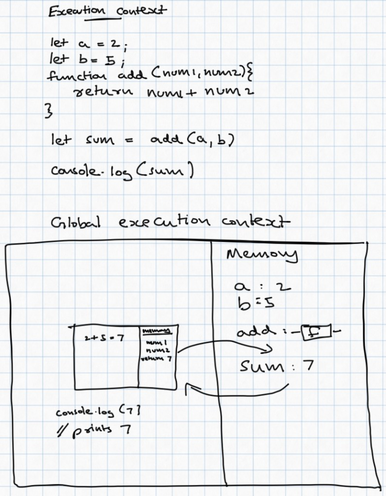
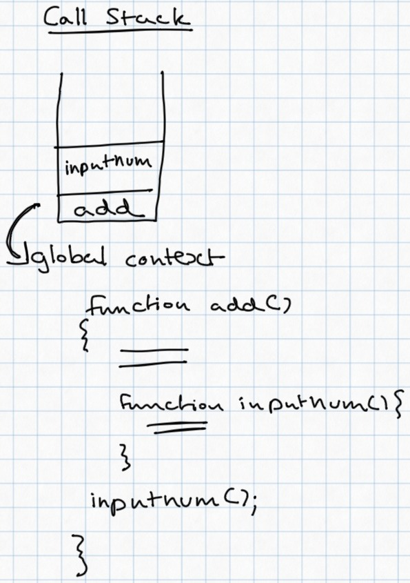

I know everyone is chasing tokens to spin up cool-looking applications that they can show off to an individual or large groups of individuals to squeeze out all the admiration their hearts desire. Some of you may have noticed the emphasis I put on pointing out that some people do crazy things just to impress a single human soul.
I started taking AI seriously, not because my manager forced me to, but because of something that happened one fine day. A friend of mine showed me a cool-looking webpage that he had made for his bestie (a female who has a boyfriend, and that boyfriend is not this so-called friend of mine).
He managed to host it on GitHub Pages even though he had zero clue about what Git or GitHub was. He did it using ChatGPT on his phone, without access to a regular computer, which I had always thought was indispensable for web app development.
This dude, who is so lazy that he won't even learn how to ride a bicycle, managed to build something using AI that took me a considerable amount of time to learn how to build myself.
AI shit is real, folks.
Then why did I take a JavaScript course if AI can do everything?
I have no idea. All I know is that I had a good time taking it.
Was it useful?
Yes, if you're planning to attend job interviews. At least, I hope so. It was great fun, too.
I'll just note down everything I've learned, since I don't know a better way to show it off to the world.
Execution Context
JavaScript executes synchronous code line by line. Each function invocation creates a new execution context, which has a memory component where its related data is stored. It also has an execution thread that executes the code line by line.
The global execution context is created initially when JavaScript starts executing a script. The function add, when declared, is stored in memory. When the function is invoked using (), a new execution context for the add function is created, which has its own local memory containing the values of num1 and num2.
Finally, the function returns a value, which gets stored in the global execution context's memory under the variable name sum. After the function returns, its execution context is removed from the call stack.
function add(num1, num2) {
return num1 + num2;
}
let sum = add(5, 10); // stored in global memory: sum = 15
Call Stack
The call stack keeps track of the functions that are currently being executed. Execution starts in the global execution context.
When the add() function is called, its execution context is added to the call stack. When the inputnum() function is called from inside add(), its execution context is added to the top of the call stack.
When inputnum() finishes executing, its execution context is popped from the call stack, and JavaScript continues executing add() from where it left off. When add() finishes executing, its execution context is also popped from the call stack, and execution continues in the global context.
function inputnum() {
return 10;
}
function add() {
let num = inputnum(); // pushes inputnum() to stack
return num + 5;
}
add(); // pushes add() to stack on top of global context
Callbacks and Higher order functions
In JavaScript, we can pass a function as an argument to another function or return a function from inside another function. Such functions are called higher-order functions.
Example:
function apply(arg, func) {
return func(arg);
}
let myFunc = (num) => num * num;
console.log(apply(5, myFunc)); // 25Here, apply is a higher-order function because it accepts another function as an argument.
myFunc is passed to apply, which invokes it with the value 5. The function returns 25, which is then printed to the console.
Passing a function inside another function as an argument is known as callback.
Closure
Consider the following example:
function increment() {
let ctr = 1;
return function inc() {
ctr++;
};
}
let myFunc = increment();
myFunc();
myFunc(); // ctr = 3
let myFunc2 = increment();
myFunc2();
myFunc2(); // ctr = 3Calling myFunc has access to the ctr variable even after the increment() function has finished executing. This is possible because of a closure.
myFunc and myFunc2 each have their own separate ctr variable because they are created by separate invocations of increment().
Each function maintains its own counter independently. Calling myFunc does not affect the counter associated with myFunc2.